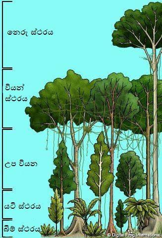
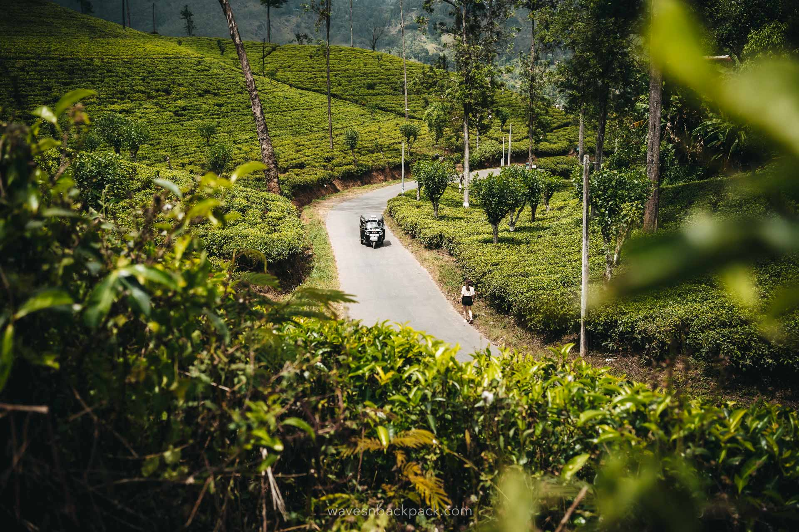

ශ්රි ලංකාවෙ වනාන්තර
ශ්රී ලංකාවෙ වනාන්තර පහල දැක්වෙන ලෙසින් වර්ග කිහිපයකි.
- නිවර්තන තෙත් සදාහරිත වනාන්තර
- කඳුකර වනාන්තර
- උප කඳුකර වනාන්තර
- වියළි මෝසම් වනාන්තර / නිවර්තන වියළි මිශ්ර වනාන්තර
- අතරමැදි වනාන්තර
- ගංගාධාර ආශ්රිත වනාන්තර
- කඩොලාන වනාන්තර
- නිවර්තන තෙත් සදාහරිත වනාන්තර

-
පිහිටීම හා දේශගුණය:
- මේවා ප්රධාන වශයෙන් ශ්රී ලංකාවේ තෙත් කලාපයේ (පහත රට සහ මීටර් 1000ට අඩු ප්රදේශවල) දක්නට ලැබේ. මෙහි වාර්ෂික වර්ෂාපතනය මිලිමීටර් 2500 ඉක්මවන අතර, උෂ්ණත්වය ඉහළ මට්ටමක පවතී.
විශේෂ ලක්ෂණ:
- වනාන්තරය ස්ථර කිහිපයකට (මහ ගස්, මධ්යම මට්ටමේ ගස්, පඳුරු සහ බිම් ආවරණ ශාක) වැදී ඇති බැවින් ඉතා ඝන ස්වභාවයක් ගනී.
- මෙම වනාන්තරවල ඇති ගස්වල කොළ හැලෙන්නේ එකවර නොව, වසර පුරා ක්රමයෙන් වන බැවින් ඒවා සදාහරිත වේ.
- ලියන, දොඹ, ඇටඹ, සහ විවිධ බඩවැල් වර්ග මෙන්ම ආවේණික ඖෂධ පැළෑටි බහුල ය.
- ජෛව විවිධත්වය අතින් අසමසම වන අතර, ශ්රී ලංකාවට ආවේණික පක්ෂීන්, උරගයන් සහ උභය ජීවීන් බහුලව වාසය කරයි.
-
ප්රධාන උදාහරණ:
- සිංහරාජ වන සංරක්ෂිතය, කන්නෙලිය, දෙදියාගල සහ නාකිදෙනිය (කේන්ද්රීය තෙත් කලාපය).
උප කඳුකර වනාන්තර
